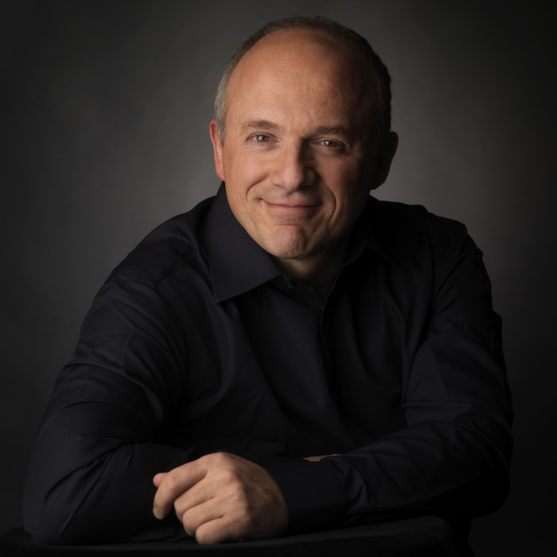
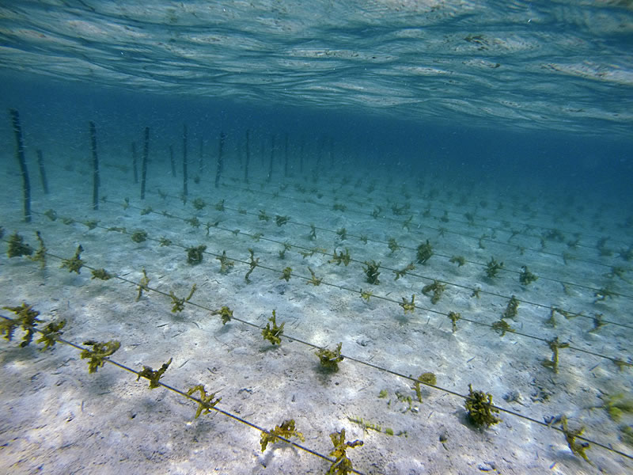
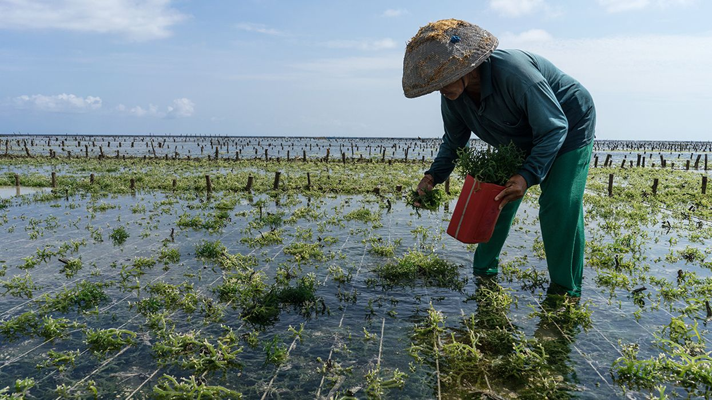

Professor Hallegraeff is
Through consulting, investing, running events and creating projects, BioMarine is paving the way to a sustainable future.
In this edited conversation with Peter Green, Professor Hallegraeff spoke about

You've spoken before about the influence your uncle had on you as a young boy. Could you expand a little on how your interest in algae and plankton really took off during those early days?
As a young boy I was always interested in nature. As a result, I was always very intrigued by my uncle's work as a veterinarian and would often help him with his practice. He was the one who gave me a little microscope for my 10th birthday.
One day, I placed a drop of water from a rainwater tank under my microscope and discovered a flurry of small, whirling organisms. I'm a fairly good artist so I started to make great drawings which I showed to my family-members and even school teachers. Yet noone had any idea what they were.
I became more and more excited and went to the library, where there were only two books highlighting organisms which bore any resemblance to my own discovery. One of them came from Leeuwenhoek who used to live 30 kilometres from where I lived in the Netherlands. He had designed the very first microscope and created very similar drawings to my own. Then I found another book, the only other book in that library that mentioned plankton, the food that whales eat. That was huge for me, I thought "My God this is so important." Right there and then I decided to devote my life to the study of microscopic algae.
I was very lucky because only now do we really recognise how important algae as the lungs of our planet. These are things that my professors at the University of Amsterdam did not tell me. The whole concept of harmful algal blooms was also hardly known. So I that was lucky because it was accepted that algal blooms happened in polluted water in the Netherlands. However, when I came to Australia I started to ask whether we had any harmful algal blooms? Many people said No! They said that here in Australia, we've got clean blue water, algal blooms are only things happening in the northern hemisphere. So of course, I started to look for it and found it everywhere, including very toxic blooms. I also very learned very quickly that people are laregly only interested in microalgae when it poses a threat to human society. So I made my career out of that because I was the very first person in the southern hemisphere to start working on this. .

Can you tell us about the time you once flew to Japan at the last minute to run tests on a harmful toxic bloom in Tasmania?
So orginally I came to Australia to work in Sydney with a CSIRO laboratory. Ultimately this lab moved to Hobart and I had to move with it. So I had already studied plankton around the mainland of Australia working from a lot of CSIRO vessels. Then, after begrudgingly moving to Hobart, I was unpacking my boxes when I decided to take a water sample in the dirt near the lab. The result? There was a huge toxic bloom. I thought, how come nobody's recognised this? I knew straight from the literature which organism this was and I knew how toxic it was. I started to look for a lab in Australia which could help me test for toxins because there was a huge shellfish industry just a few kilometres down the water. There was nobody! So I took drastic action and flew straight to Japan. With that we did the very first work describing the bloom characteristics. Ultimately, I then helped in setting up a lab in Sydney and Tasmania. That was the very start of anybody in Australia monitoring for seafood toxins. This ultimately helped create a market advantage because we could now export shellfish to Europe or America with the results of testing our shellfish.

How did your work with ballast water from ships really evolve?
Well after setting up a monitoring programme I started to think a bit more about it. I thought it was very strange. This is the only location where this organism blooms in Australia... What's different? I realised that it was completely outside its normal distribution, and I came up with this very wild concept. I looked at all these ships coming into Tasmania. These ships bring huge amounts of water from Japan from a location where this organism grows naturally. That idea required a lot of science to validate. Using molecular genetics, we had to link it to an overseas donor population and that took me a long time. However once that was established, I drafted the very first version of the International Maritime Organisations Ballast Water Convention. And again, is that to take so long. It took probably 20 years for the whole international community to ratify it. So the very first draft that back to the late 1990s was only ratified in 2017.

Could you expand a little on your recent article which addresses the perceived global increases in algal blooms?
It's been a very interesting process to write that paper. So then we started to monitor in Australia and interesting in most parts of the world, you know, good monitoring only started around 1985. That's when I started in Tasmania. Good data only started to accumulate from the late 1980s. So over time, the question was raised very early about increases in algal blooms. I wrote a review in 1993, early-on, which suggests that an increase in awareness of algal blooms was driving this apparent global increase in algal blooms. However, a lot of people miscited me, stating that I claimed that algalblooms are increasing all over the world. So.. if that's true, it's serious and we have to really work out what's driving it. So I became part of a UNESCO group in the 1990s. I loved this because I'll berries is my favourite city in the world. And all the meetings are in headquarters of UNESCO, Paris, and I have actually a sister lived in Paris. So you know, probably something like 20 plus pages, ticket to Paris, I love the place. So I'll be very active at an international forum. And it was important to really know, are humans really doing this? So, after so much time had past, I suggested to the UNESCO forum that we should start a proper database. So it took a long time and I've probably been working on that database since 2013. We have listed it as a public database, which is good so everybody can read all the analysis we did. And so we have nearly 10,000 records of algal blooms now from all over the world. I started to crunch data with an Australian colleague, Professor Anthony Richardson, who is a professor of mathematics. When we crunched it we had to do all kinds of corrections, because we are different densities of data for different parts of the world, you have to correct for this. Then, when we looked at it we also realise that well, there are different densities in different parts of the world, that also means that at different monitoring intensities in different parts of the world, and we had to correct for that. After all this t came out very clearly, that really, when you're correct for monitoring efforts, there is no uniform global increase over the world. It's also something that you would not expect, because there's so many different species that behave differently and different parts of the world have different interests, some countries do a lot of aquaculture in the Mediterranean tourism impacts the most. So we started to look at the drivers and one driver that came out very clearly is that there's been a global increase in aquaculture. Aquaculture is very clearly cross correlated with algal blooms.

You've spoken before about the role plankton play in reducing co2 levels. Since you wrote you're book "Plankton: A critical creation", could you reflect a little more on any updates you've noticed regarding plankton's ability to drawdown carbon dioxide?
This really goes back to when people really started to analyse the role algae played in creating the The White Cliffs of Dover, UK. Coccolithophores are a single-celled alga which make the white-coloured calcite in the cliffs. After a certain point, people started to realise just how much algal biomass was present in the cliffs and how much carbon dioxide must have been drawndown by these organisms. It must have cooled the planet. We now have good models which can quantify this. So that's where some of these concepts started to come from. John Martin, an oceanographer, who at the end of his career made a bold statement where he looked at so there's some parts of the world where everything seems to be right, particularly open ocean, and also the Antarctic ocean, you have a lot of sunlight, you have nitrogen and phosphorus. But there's still this very little algae growing and he worked out that was limiting, is iron. And it has to do with the fact that ancient oceans 3.5 billion years ago, are very rich in iron, but then algae evolved that produce a lot of oxygen. As a result, all of that iron oxidised like rust, and it dropped out of the ocean. That is actually the basis of the whole economy of Australia today, because that's the basis of the iron ore deposits in Western Australia. That's why a lot of algae today are limited by iron. If you sprinkle iron over the water, you immediately get an algae bloom. So that started to trigger this whole concept of geoengineering. One of my colleagues Professor Phil Boyd at the University of Tasmania is working on this. You have to fertilise the algae at the right conditions, you have to hope to generate the right species because you don't want a toxic algal bloom. Despite all this it's been disappointing! Despite the consensus now saying that yes, you can get an algal bloom at the surface but it's very quickly gobbled up by fish, krill and crustaceans, and all that captured carbon dioxide very quickly leeches out again. What only counts is what ends up in the deep sea and is sequestered there for 1000s of years. That is really a fraction of a percent of the extra algal blooms that you create at the service. So that is where the science is. The consensus of scientific opinion is that in order to really carbon sequestering impact on the atmosphere, you would have to fertilise like a third of the world ocean. And you have to redo this every month and with little benefit. The economics simply don't add up. It was a good idea. We learned a lot of science, stimulated a lot of science, but at the moment, no, we have to look at other opinions.
What advice might you give to your younger self or someone just starting out on this journey of research in microalgal blooms and plankton?
Follow your heart. Do what you want to do, and at times, be stubborn, don't listen to other people. Only when you follow your heart can you give it your all. You want to be satisfied that you gave your best and used your talents optimally and that's ultimately it's been so rewarding that I can help people all over the world now.
Which books might you recommend to someone trying to build ventures in this space?
I recently found a reprint of 20,000 Leagues Under the Sea by Joules Vern which was written in 1869. I first read this book as a young boy where I was more focused on the spectacular bits. Now, given that I know so much more marine science I started to realise wow, this is so visionary! Captain Nemo just knows all the oceans like hi back pocket. He knows how to harvest particular seaweeds, for particular medicine. It's just so visionary. You could use this as a textbooks for fish, and all kind of marine insights. There are whole sections where he described all different species, like you see, in different world oceans, you could get a geographical map of fish out of this book. So it stumped me that I got so much more out of the book by reading it at the end of my career than at the start!